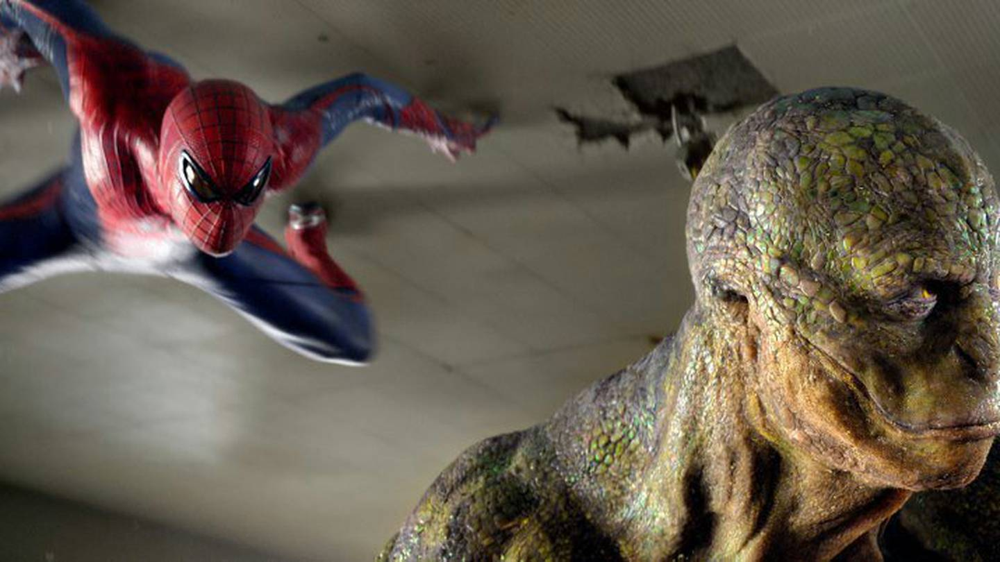

El Lado Oscuro del Hombre Araña: Spiderman Desata el Caos Luchando contra el Lagarto
Por J. Jonah Jameson
Nueva York, 20 de Enero de 2024
¡Atención, ciudadanos de Nueva York! Una vez más, la ciudad que nunca duerme se ve envuelta en el caos, y esta vez, el culpable es uno de los llamados "héroes" que supuestamente nos protegen: Spiderman. Siempre he sostenido que este enmascarado no es más que un problema disfrazado, y los eventos recientes solo confirman mis sospechas.
El último episodio de imprudencia de Spiderman involucra al Lagarto, una criatura monstruosa que ha sembrado el terror en nuestras calles. En lugar de actuar con la cautela y la astucia que se espera de un supuesto protector de la ciudad, Spiderman ha optado por enfrentarse al Lagarto en una confrontación que solo ha exacerbado la destrucción y el caos. Mientras las calles de nuestra ciudad son escenario de una batalla épica entre el Hombre Araña y esta aberración mutante, los ciudadanos inocentes son los que sufren las consecuencias. Edificios destrozados, vehículos volcados y personas aterrorizadas son solo algunas de las imágenes desgarradoras que presenciamos hoy. Pero lo más preocupante de todo es la imprudencia y la negligencia de Spiderman. En lugar de proteger a los ciudadanos y asegurarse de que el Lagarto sea detenido de manera segura y eficaz, Spiderman parece más interesado en protagonizar una pelea espectacular, sin importarle las vidas y la propiedad que están en juego. Es hora de que los ciudadanos de Nueva York exijan responsabilidad a aquellos que pretenden ser nuestros protectores. No podemos permitir que individuos como Spiderman continúen poniendo en peligro nuestras vidas con su imprudencia y su arrogancia. Es hora de que tomemos medidas para proteger nuestra ciudad y erradicar la amenaza que representan estos enmascarados disfrazados de héroes. El Daily Bugle seguirá informando sobre esta situación en desarrollo y mantendrá a los ciudadanos de Nueva York informados sobre los eventos que se desarrollen. Pero recuerden, en tiempos de crisis, es importante permanecer unidos y demostrar que la ciudad de Nueva York no se doblegará ante ninguna amenaza, ya sea interna o externa.